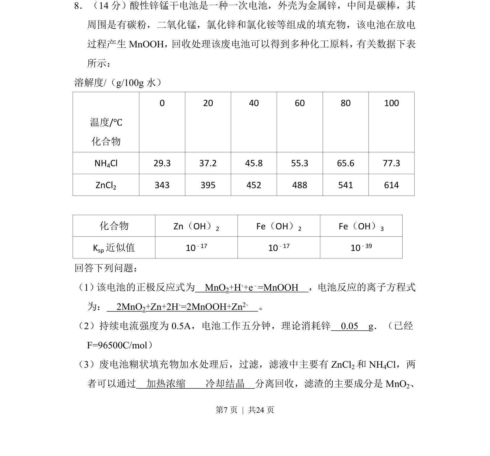
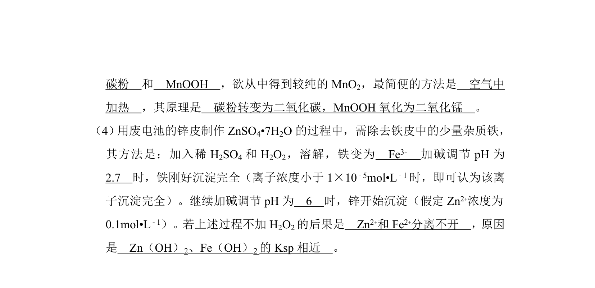
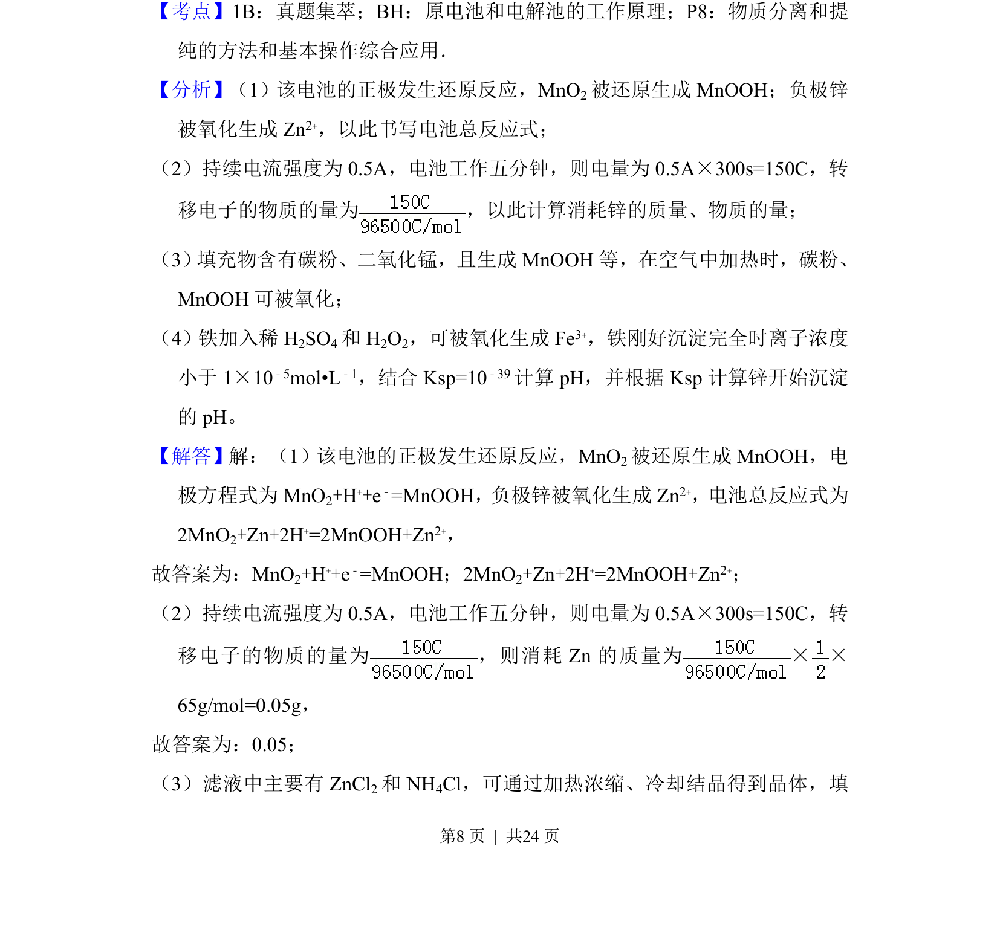
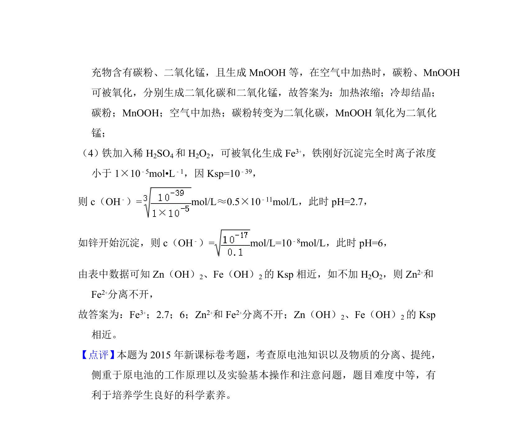

考点：电化学 化学计算 物质分离


第8题考查酸性锌锰干电池原理、电极反应书写及废料回收分离操作与简单计算。


📄 原 PDF 第 7 页：
素材/真题/吉林/2008-2024·（吉林）化学高考真题/2015年高考化学试卷（新课标Ⅱ）（解析卷）.pdf
8．（14分）酸性锌锰干电池是一种一次电池，外壳为金属锌，中间是碳棒，其 周围是有碳粉，二氧化锰，氯化锌和氯化铵等组成的填充物，该电池在放电 过程产生MnOOH， 回收处理该废电池可以得到多种化工原料， 有关数据下表 所示： 溶解度/（g/100g水） 温度/℃ 化合物 0 20 40 60 80 100 NH4Cl 29.3 37.2 45.8 55.3 65.6 77.3 ZnCl2 343 395 452 488 541 614 化合物 Zn（OH）2 Fe（OH）2 Fe（OH）3 Ksp近似值 10﹣17 10﹣17 10﹣39 回答下列问题： （1） 该电池的正极反应式为 MnO2+H++e﹣=MnOOH ，电池反应的离子方程式 为： 2MnO2+Zn+2H+=2MnOOH+Zn2+ 。 （2）持续电流强度为0.5A，电池工作五分钟，理论消耗锌 0.05 g．（已经 F=96500C/mol） （3）废电池糊状填充物加水处理后，过滤，滤液中主要有ZnCl 2和NH 4Cl，两 者可以通过 加热浓缩 冷却结晶 分离回收，滤渣的主要成分是MnO 2、